Analiza rješenja · JOI Spring Camp 2024 · Dan 4
Put bijega 2
O ovom članku
Tekst je prijevod službene japanske prezentacije rješenja, preoblikovan u članak. Slajdovi su ugrađeni kao slike; natpis pod svakim slajdom je prijevod teksta na njemu. Dijelovi označeni kao trenerska napomena nisu u izvornoj prezentaciji — dodani su da popune korake koje slajdovi preskaču ili samo skiciraju.
Slajdovi
Zadatak i presjedanje
izvorni slajdovi 1–3
-
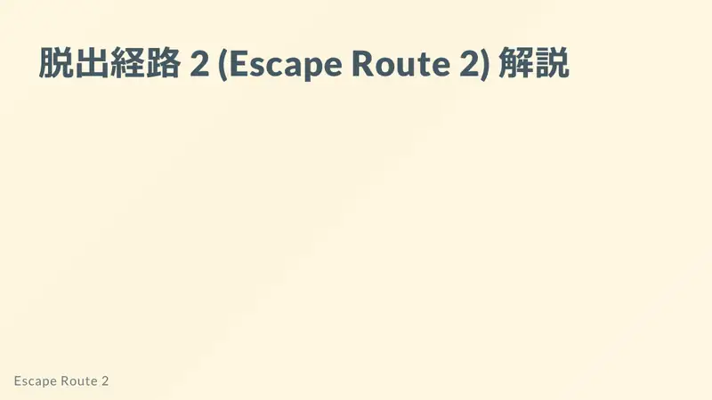
1Naslov. -
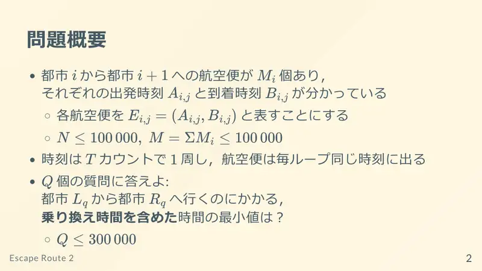
2Letovi $i\to i+1$ s polaskom $A$ i dolaskom $B$; vrijeme ciklički s periodom $T$; $Q$ upita: najkraće vrijeme $L\to R$ uključujući presjedanja. -
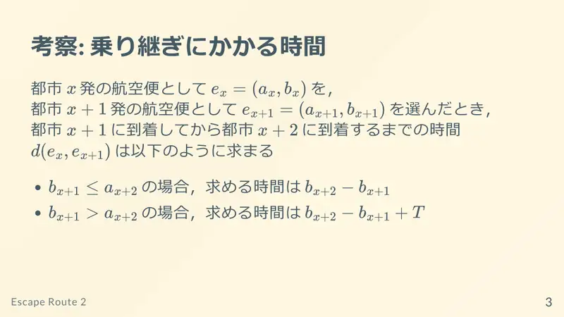
3Presjedanje: nakon leta $(a,b)$ iz $i$ i leta $(a',b')$ iz $i+1$: ako $b\le a'$, vrijeme od dolaska u $i+1$ do dolaska u $i+2$ je $b'-b$; inače $T+b'-b$ (sutradan).
← → tipke ili klik na sliku
Podzadaci 1–3 31 bod
Koraci algoritma
Greedy po letovima
izvorni slajdovi 4–10
-
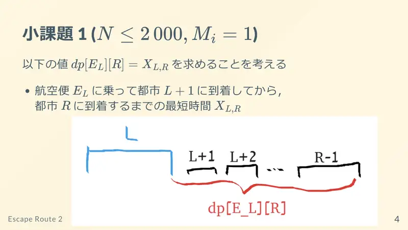
4Podzadatak 1: $d(f,j)$ = najkraće vrijeme od dolaska letom $f$ do dolaska u grad $j$. -
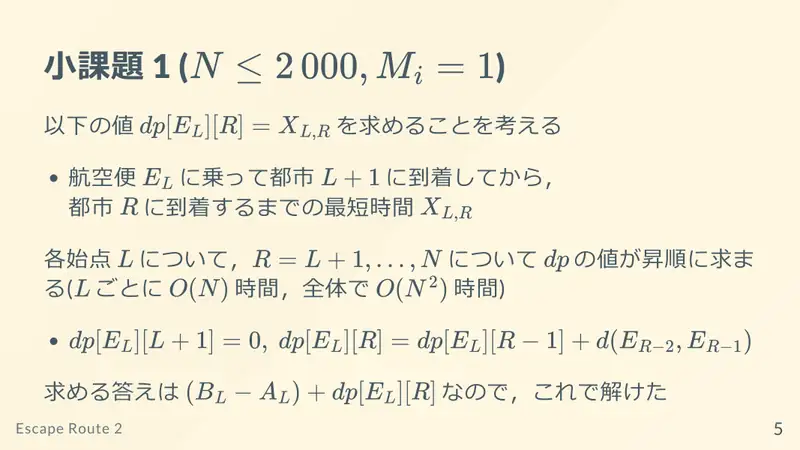
5Za svaki početak, $d$ po rastućem $j$ u $O(N)$; ukupno $O(N^2)$; odgovor $=d+ $ trajanje prvog leta. -
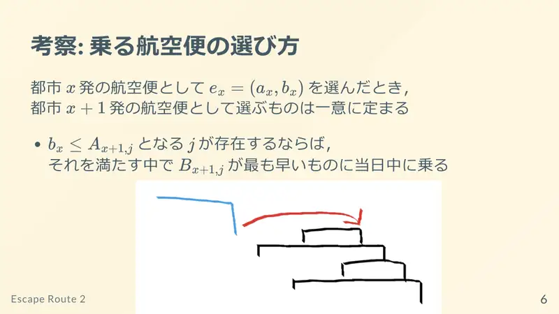
6Nakon leta $(A,B)$ iz $i$, let iz $i+1$ je jedinstven: ako postoji let s $A'\ge B$, uzmi među njima onaj s najranijim $B'$ isti dan. -
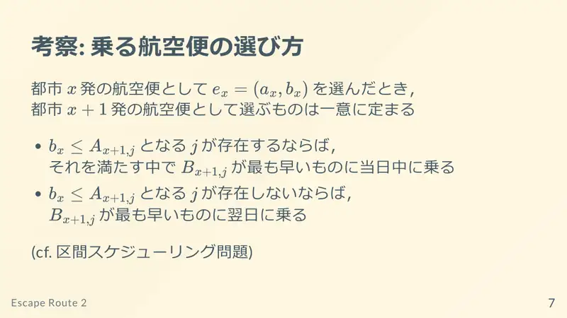
7Inače uzmi let s najranijim $B'$ sutradan (usp. intervalno raspoređivanje). -
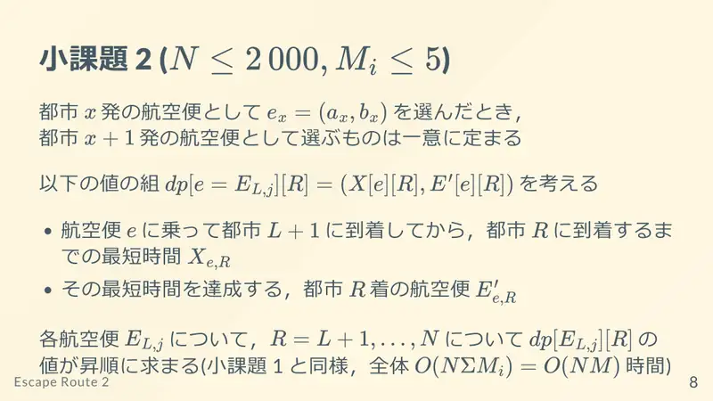
8Podzadatak 2: par (najkraće vrijeme, let kojim se stiže) za svaki let $f$ i svaki $j$, kao u podzadatku 1: $O(N\sum M)$. -
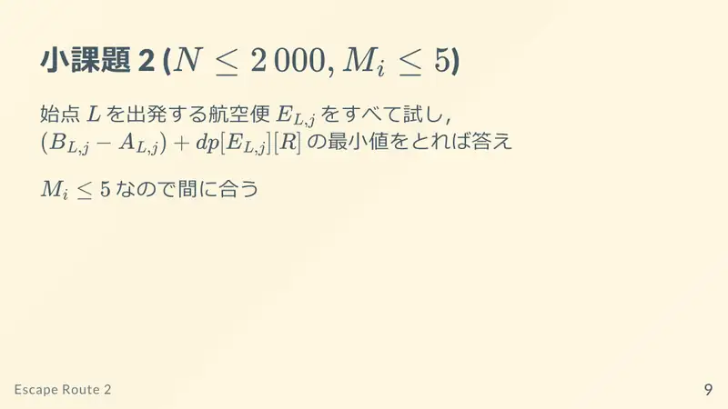
9Probaj sve letove iz $L$, uzmi minimum — dovoljno brzo. -
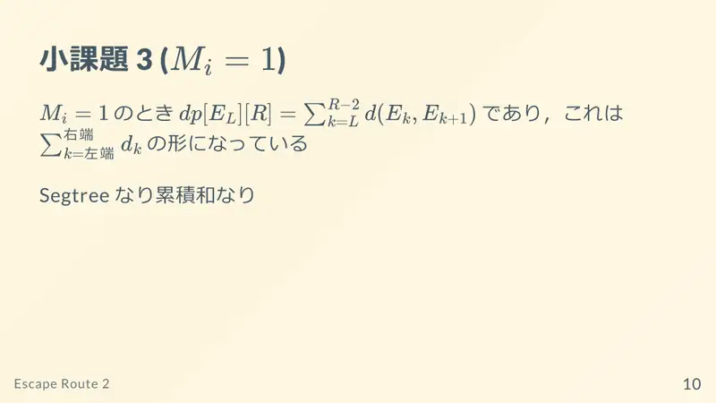
10Podzadatak 3 ($M_i=1$): vrijeme je „desni kraj − lijevi kraj” + $T\cdot$(broj prijeloma dana) → prefiksne sume ili segmentno stablo.
← → tipke ili klik na sliku
Podzadatak 4 23 boda
Koraci algoritma
Tablice se sastavljaju
izvorni slajdovi 11–14
-
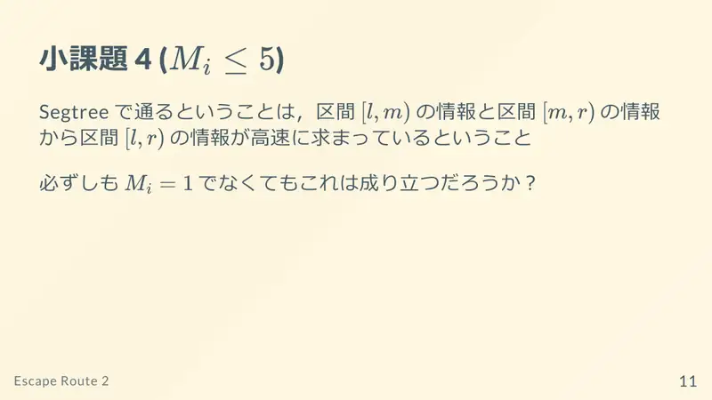
11Segmentno stablo radi jer se informacija $[l,r)$ dobiva iz $[l,m)$ i $[m,r)$; vrijedi li to i za $M_i\gt1$? -
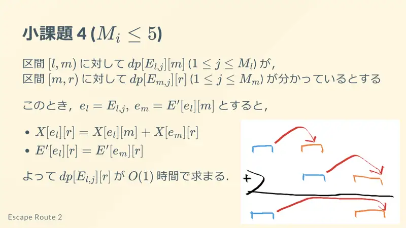
12Za $[l,m)$ znamo (vrijeme, dolazni let) po početnom letu; dolazni let u $m$ određuje sljedeći let iz $m$, a za njega desni interval daje ostatak → $O(1)$ po početnom letu. -
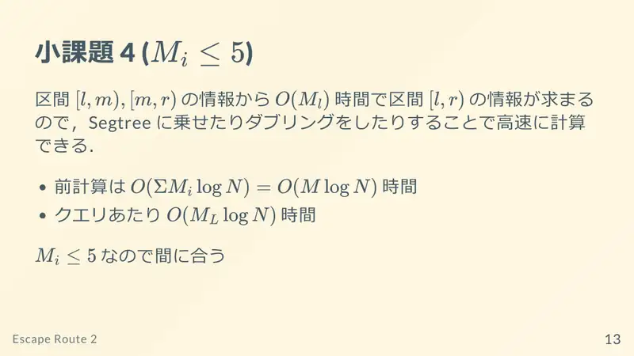
13Spajanje u $O(M_l)$ → segmentno stablo ili binarno dizanje: priprema $O(\sum M\log N)$, upit $O(M_L\log N)$. -
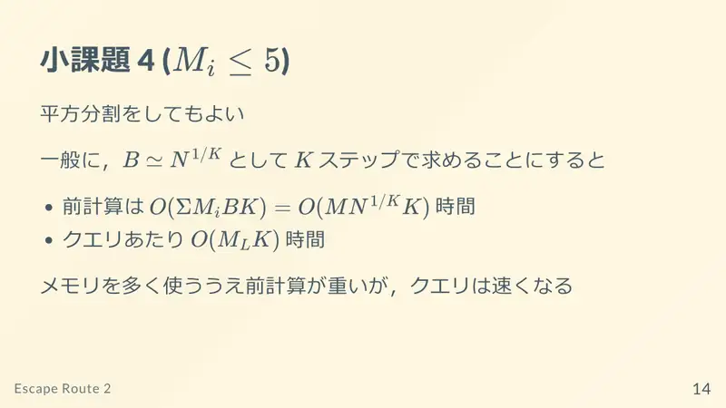
14Može i korjenska dekompozicija: korak $k$, priprema $O(\sum M\cdot N/k)$, upit brži; više memorije.
← → tipke ili klik na sliku
Podzadaci 5–6 46 bodova
Koraci algoritma
Manja strana i $S\sqrt{Q}$
izvorni slajdovi 15–20
-
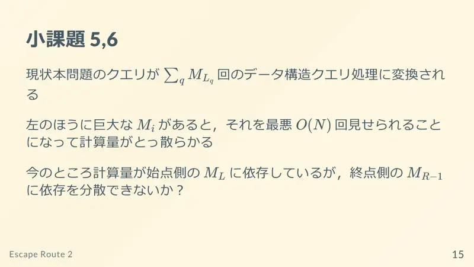
15Upit se pretvara u $O(M_L)$ strukturnih upita; veliki $M_L$ lijevo može se pojaviti $Q$ puta. Može li se ovisnost prebaciti i na $R$? -
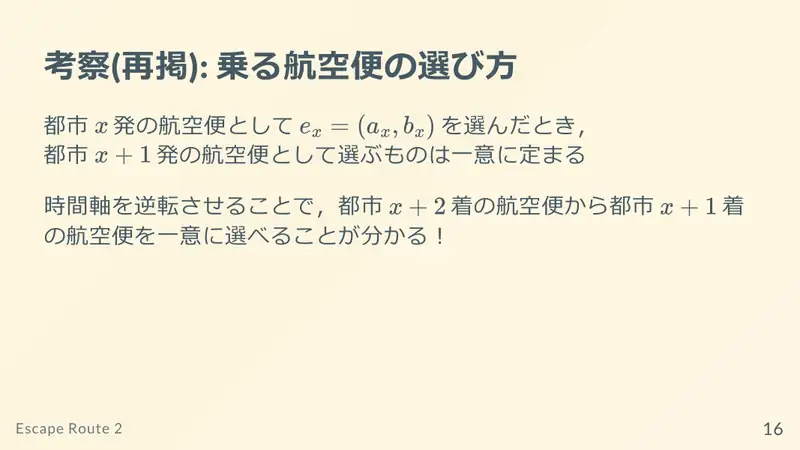
16Obrat vremena: iz leta kojim se stiže u $R$ jedinstveno se bira prethodni let u $R-1$. -
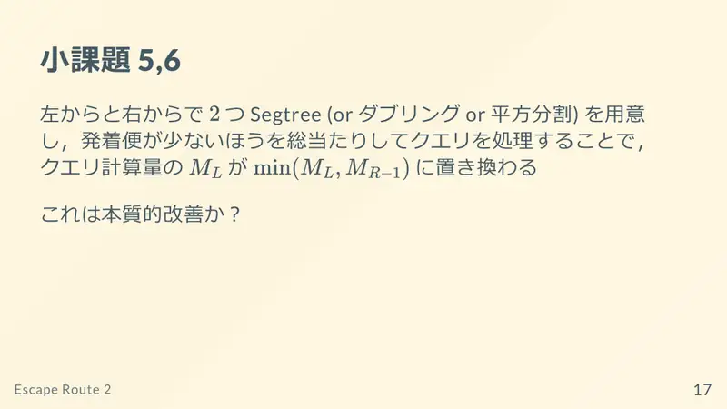
17Dvije strukture (slijeva i zdesna); iteriraj po strani s manje letova: $M_L\to\min(M_L,M_{R-1})$. Je li to bitno poboljšanje? -
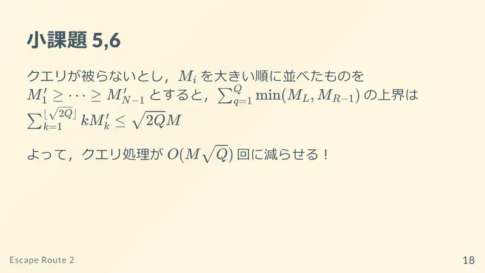
18Da: za različite upite, sortirano padajuće $m_1\ge m_2\ge\dots$, vrijedi $m_k\le S/\sqrt k$, pa je ukupno $O(S\sqrt Q)$ strukturnih upita. -
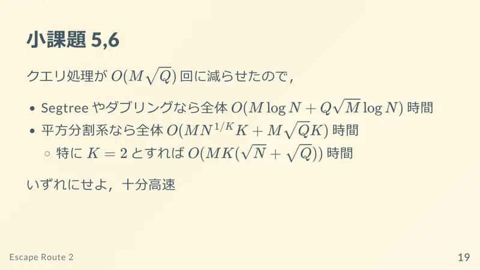
19Segmentno stablo/dizanje: $O(S\sqrt Q\log N)$; korjenska dekompozicija: $O(S\sqrt Q)$ uz prikladan $k$. Dovoljno brzo. -
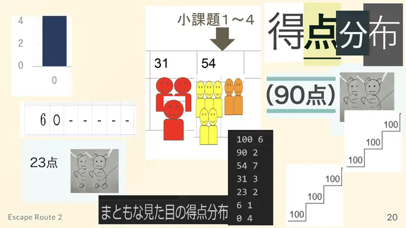
20Kraj.
← → tipke ili klik na sliku
Sažetak
- Sljedeći let jedinstven (najraniji dolazak) → put je funkcija početnog leta.
- Tablice po letovima za intervale gradova sastavljive u $O(M_l)$ → segmentno stablo/dizanje.
- Obrat vremena + iteracija po manjoj strani: $\sum\min\le S\sqrt Q$.